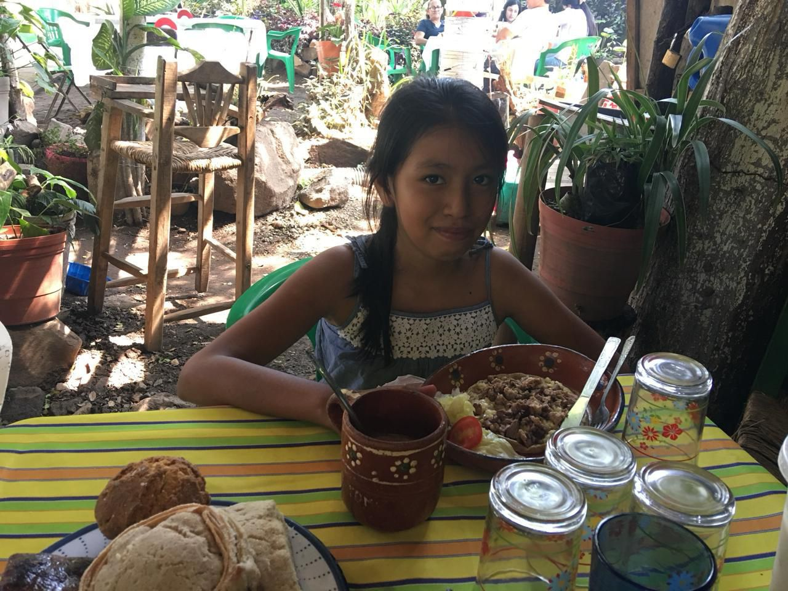
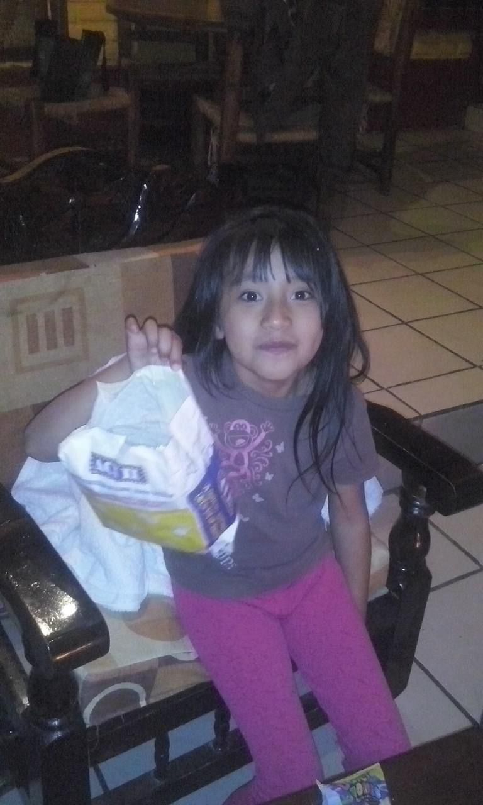

<!DOCTYPE html>
<html lang="es">
<head>
<meta charset="UTF-8">
<meta name="viewport" content="width=device-width, initial-scale=1.0">
<title>autobiografia</title>
<link href="https://maxcdn.bootstrapcdn.com/bootstrap/4.5.2/css/bootstrap.min.css" rel="stylesheet">
</head>
<body>

<!--AQUI IRA EL CONTENIDO POR MODULOS -->

<!--AQUI IRA EL CONTENIDO POR MODULOS -->

<!--scripts -->
<script src="https://code.jquery.com/jquery-3.5.1.slim.min.js"></script>
<script src="https://cdn.jsdelivr.net/npm/@popperjs/core@2.5.4/dist/umd/popper.min.js"></script>
<script src="https://stackpath.bootstrapcdn.com/bootstrap/4.5.2/js/bootstrap.min.js"></script>
<!--scripts -->

</body>
</html>
<!--BARRA DE NAVEGACION -->
<nav class="navbar navbar-expand-lg navbar-dark bg-dark">
    <a class="navbar-brand" href="#">Mi autobiografia</a>
    <button class="navbar-toggler" type="button" data-toggle="collapse"
    data-target="#navbarNav" aria-controls="navbarNav"
    aria-expanded="false" aria-label="Toggle navigation">
    <span class="navbar-toggler-icon"></span>
    </button>
    <div class="collapse navbar-collapse" id="navbarNav">
    <ul class="navbar-nav">
    <li class="nav-item">
    <a class="nav-link" href="autobiografia.html">Presentacion</a>
    </li>
    <li class="nav-item">
    <a class="nav-link" href="infancia.html">Mi infancia</a>
    </li>
    <li class="nav-item">
    <a class="nav-link" href="adolecencia.html">Mi adolecencia</a>
    </li>
</div>
</li>
</ul>
</div>
</nav>

<h1 style="text-align: center;">Mi infancia</h1>
<div class="container mt-4">
    <div class="jumbotron">
    <p class="lead" style="text-align: justify;">Mi infancia yo desde pequeña era una niña muy impera activa me gustaba mucho jugar,hablaba mucho bueno hasta ahora pero desde pequeña me a gustado tener muchas amigos haci que de pequeña me gustaba hablar con muchos niñ@ para hacérmelos de amigos también era muy ocurrente ya que cuando estaba pequeña como a la edad de tres años estaba jugando con mi hermano a la peluquería y me rapo ese día estábamos a cargo de mi abuelita y mi abuelita le dijo a mi mamá que se me avía pegado un chicle y que por eso me cortaron el pelo cuando en realidad mi hermano me rapo con la maquina,también a mi y a mi familia desde pequeños nos gusta ir a Mazamitla 
    ya que mi papá y de allá y cada que vamos nos cuenta su historia de cómo creció y donde vivía y a las escuelas que iba.</p>

    <hr class="my-4">
<div class="row">
<div class="col-md-6">


</div>
<div class="col-md-6">
    
    
    </div>
